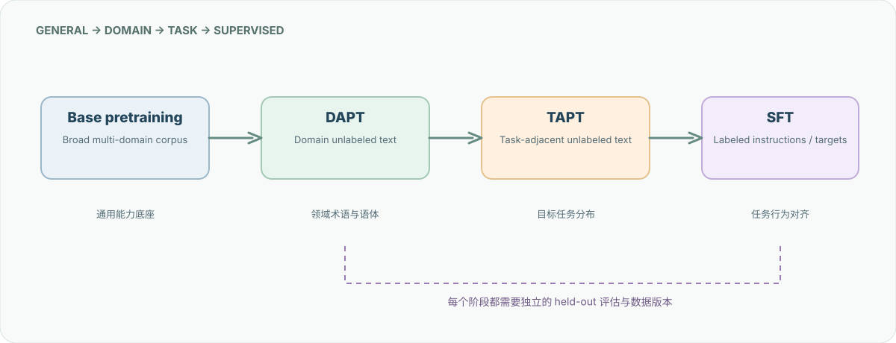
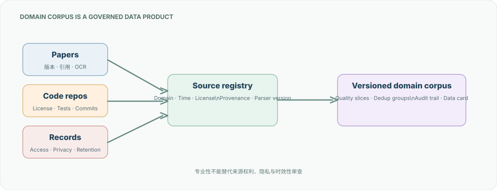
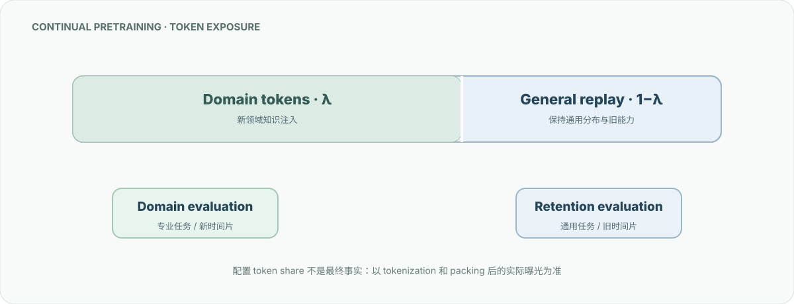

MODULE 22 / LLM DATA ENGINEERING
领域适配数据策略
系统理解 DAPT、TAPT 与 Continual Pretraining，利用领域数据与通用 replay 兼顾专业能力和旧知识保持。
一个通用模型已经读过大量网页，但它未必熟悉医学、法律、金融、代码仓库或某个新兴领域。继续预训练可以让模型适应新的文本分布；问题是，如何增加领域能力而不把原有通用能力冲掉？答案不是简单地“多喂一些领域语料”，而是设计目标语料、阶段顺序、混合比例和双轨评测。
领域适配不是把 SFT 改个名字

| 阶段 | 训练文本 | 优化目标 | 回答的问题 |
|---|---|---|---|
| 通用预训练 | 广覆盖、多来源语料 | 语言建模目标 | 建立通用语言与知识表示 |
| DAPT | 目标领域无标注文本 | 继续语言建模 | 模型是否熟悉领域术语、语体与知识分布？ |
| TAPT | 目标任务相关的无标注文本 | 继续语言建模 | 模型是否更贴近具体任务的数据分布？ |
| SFT | 指令、输入、标签或目标输出 | 监督任务损失 | 模型是否学会按要求完成任务？ |
Don’t Stop Pretraining（Gururangan et al., ACL 2020）在生物医学、计算机科学、新闻和评论四个领域、八个分类任务上研究 DAPT 与 TAPT。论文报告领域继续预训练带来收益，进一步使用任务语料的 TAPT 在 DAPT 后仍能改善表现；在该研究的比较中，DAPT 后接 TAPT 的组合取得最好的任务表现。请注意：这项研究以 RoBERTa 和分类任务为实验环境，不能把其绝对收益直接外推到任意 decoder-only LLM。
领域语料：专业，不等于可靠

领域数据常见问题不是“量太少”这么简单，而是数据质量和权利结构更复杂：
- 医学：论文、临床指南、教材、病例和患者生成文本的可信度、时效性与隐私风险完全不同；不能把病例文本视为普通网页。
- 法律：法规、判例、合同模板和评论文章有不同权威等级与生效日期；版本和司法辖区必须成为元数据。
- 代码：仓库、文件、函数、issue、commit 与测试构成关联结构；许可证、复制代码、构建可执行性和依赖环境都影响训练价值。
- 金融与企业知识：数据可能有访问控制、商业秘密和时间敏感性；脱敏后仍需做权限和再识别风险审查。
- 科学研究：论文正文、补充材料、图表、公式和引用链需要保留文档结构，避免 OCR / 解析错误变成训练事实。
建议每条领域样本保留：source id、领域/子领域、创建时间、抓取时间、版本、生效区间、许可/使用条件、解析器版本、语言置信度、质量审计状态和 split。领域标签不是永久真值；跨领域文档应允许多标签或不确定标签。
Continual Pretraining：新知识注入与旧能力保持

把继续预训练看成混合目标：
其中 表示领域数据在训练 token 中的目标权重， 是领域语料损失， 是通用 replay 损失。这个表达式是混合目标的简化形式；真实训练还受采样器、序列打包、学习率、权重衰减和数据重复曝光影响。
一个常见错误是按“文档数量”混合。文档长度不同，真正决定模型看到什么的是经过过滤、tokenization、packing 和重复采样后的 token exposure。应该监控实际领域 token share，而不只是配置文件里的 document ratio。
TiC-LM（ACL 2025）用 114 个 Common Crawl dumps 构建时间连续预训练基准，并设计跨时间与跨领域评估。论文报告，在其通用网页数据设置中，autoregressive meta-schedule 加固定比例旧数据 replay 的方法可以在显著低于从头重训的计算量下达到相近 held-out loss；但不同领域对 replay 的需求不同，通用网页数据更需要 replay，而特定领域可能有不同权衡。
如何观察遗忘？
在相同 tokenizer 和评测集上，记录适配前后通用 held-out loss 的变化：
正值表示通用验证损失变差，但它不是完整的能力指标。还要同时看领域任务、通用任务、事实时效性、校准、安全行为和不同语言切片。不要只挑领域 benchmark 的提升来宣布适配成功。
交互计算器：给定 token budget，领域与通用数据各占多少？
此计算器把配置的 token share 转成理论 token 数。它不代表实际有效训练 token；生产中需要从 tokenizer、packing 与 sampler 日志重新统计。
# scripts/domain_mix.py
from scripts.domain_mix import token_exposure
plan = token_exposure(total_tokens=100_000_000_000, domain_share=0.30)
print(plan) # domain=30B, general=70B可执行的领域适配决策流程
- 定义适配目标：写清目标领域、子任务、语言、时间窗口和可接受的通用能力退化范围。
- 建立领域数据卡：来源、许可、时效、隐私、版本、覆盖和排除条件。
- 建立基线：保存 base model 在领域和通用验证集上的损失与任务分数。
- 设计对照组：base only、DAPT、DAPT+replay、DAPT+TAPT；预算与 tokenizer 尽量一致。
- 监控实际 token exposure：按来源、领域、语言、时间和重复簇统计。
- 评估遗忘与迁移：领域提升、通用保持、时间泛化和安全切片一起报告。
- 版本化发布：记录 checkpoint、数据快照、配比、训练步数、学习率、tokenizer 与评测结果。
参考资料
- Gururangan et al. (2020), Don’t Stop Pretraining: Adapt Language Models to Domains and Tasks，ACL 2020。
- Li et al. (2025), TiC-LM: A Web-Scale Benchmark for Time-Continual LLM Pretraining，ACL 2025。
- Shi (2025), Continual Learning of Large Language Models: A Comprehensive Survey，ACM Computing Surveys。
- Zhang et al. (2025), ADEPT: Continual Pretraining via Adaptive Expansion and Dynamic Decoupled Tuning。
- Data Mixing Laws，ICLR 2025：数据混合权重与模型表现的实验分析。